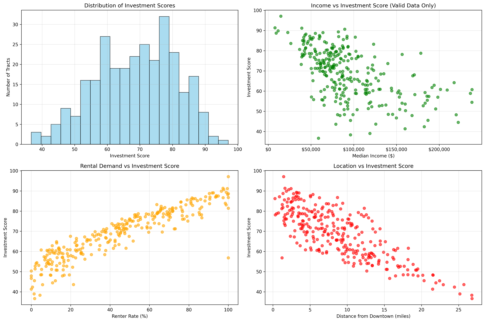

Austin Score Analysis
Analytical groundwork supporting the Austin Investment Opportunity Map, focusing on indicator behavior, normalization choices, and robustness.
Objective
The goal was to evaluate whether the selected indicators and weighting scheme produced a stable, interpretable composite score suitable for neighborhood-level comparison.
Methods
- Exploratory data analysis of each indicator
- Normalization using z-scores and min–max scaling
- Sensitivity testing across alternative weight sets
Python · pandas · geopandas
NumPy · Matplotlib / Seaborn
Jupyter Notebooks
Key Visualizations
The figure below summarizes score distributions, indicator correlations, and sensitivity outcomes.

Findings
Results showed consistent rank-ordering among top-scoring neighborhoods under reasonable weighting variations. Indicators related to accessibility and mixed-use intensity were the strongest contributors to overall score variation.
Implications
These findings support the use of the composite score as a screening and prioritization tool rather than a definitive ranking, reinforcing the importance of contextual interpretation.